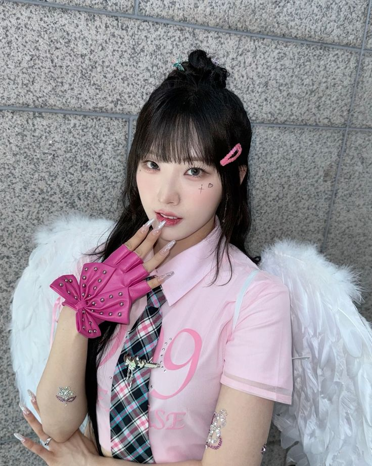

Loona Members
Heejin

HeeJin is a weirdo obsessed otaku, and is a Beyonce and Taylor Swift fan, she was the first revealed character of the LOONAVERSE. She lives on Earth along with HyunJin, HaSeul, YeoJin, and ViVi. Her solo song is ViViD Her color is the Vivid Pink, Her animal is the Rabbit.


Hyunjin
Judas.... i mean, HyunJin. Is probably a compulsive buyer She is the second revealed member of LOONA and a member of its first sub-unit, LOONA 1/3. She is also a member of Loossemble and serves as the group’s leader. Her color is Yellow, Her animal is the cat, and her solo song is 다녀가요 (Around You)
Haseul
Haseulie is another weirdo, the third revealed character of the LOONAVERSE. She lives on Earth along with HeeJin, HyunJin, YeoJin, and ViVi. Her solo song is 소년, 소녀 (Let Me In), her color is Green, her animal is the White Bird.

Yeojin
The kid named YeoJin She is the fourth revealed member of LOONA as well as the maknae (youngest). She is also a member of Loossemble. Her animal is the Frog (bc a frog kidnaped her), her color is the orange, and her solo song is 키스는 다음에 (Kiss Later)
Vivi

THE CHINESE ViVi is a Hong Kong-born, South Korea-based singer and model. She is the fifth revealed member of LOONA and a member of its first sub-unit, LOONA 1/3. She is also a member of Loossemble. Her color is the light pink, her animal is the deer, and her solo song Everyday I Love You